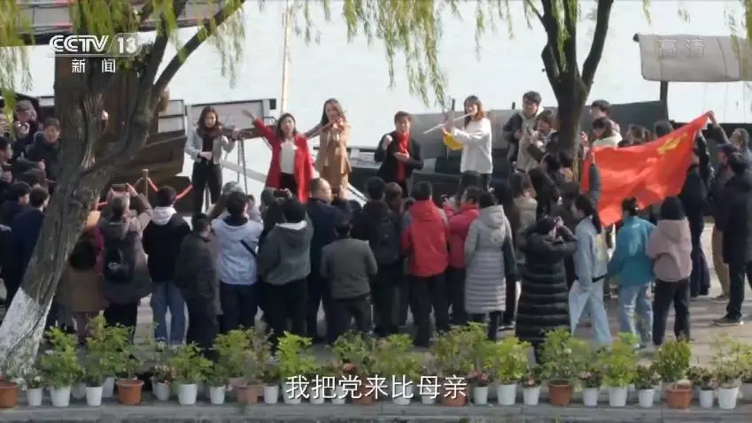

一曲《唱支山歌给党听》在春日的阳光中响彻在湖面船边。为庆祝中国共产党诞辰100周年，我们在红船旁唱响了对党的祝福，由青年歌手孙伯纶和浙江卫视主播秦原领唱，迅速发展为众人大合唱的快闪活动。老年人、大学生、小学生、党政机关工作人员、游客等都参与到这场盛大的活动中来，大家会唱的合唱，不会唱的打着拍子，每个人都饱含着热情，用自己歌声表达了对党的无限热爱和深切祝福。
没有共产党就没有新中国，在嘉兴温暖的阳光下，诉说着对党的感谢，更能感受到这句话真切的含义。 现场游客：我们热爱中国共产党，我们爱我们的祖国。
现场游客：共产党成立100周年，非常激动。
现场游客：歌声响起的时候，真的让我非常非常的感动。
现场游客：心脏是红的。
现场游客：没有共产党就没有新中国。

（总台央视记者 张文华 曹红晨 李楠 李晓村 张雍 方志军 史文龙）
来源：央视新闻客户端